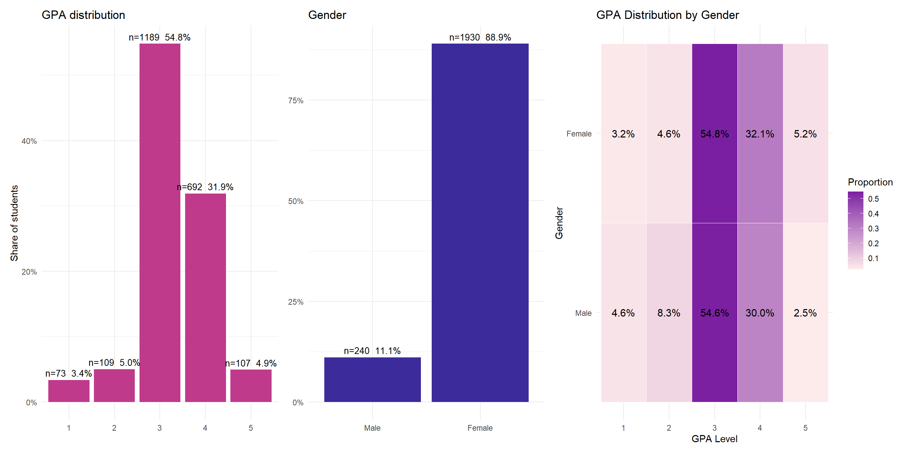
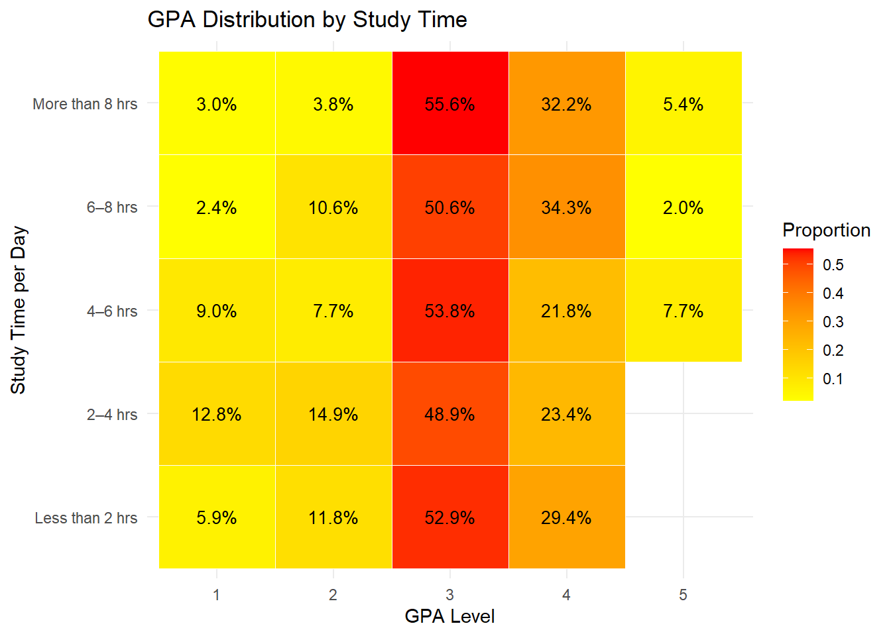
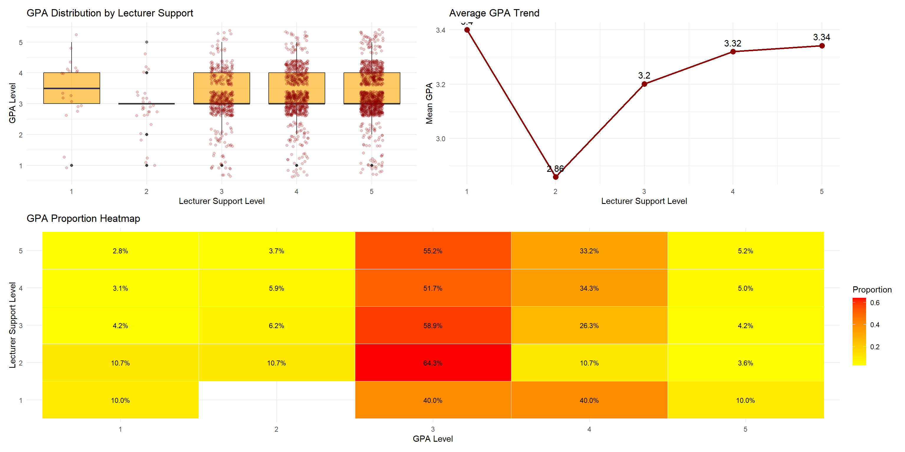
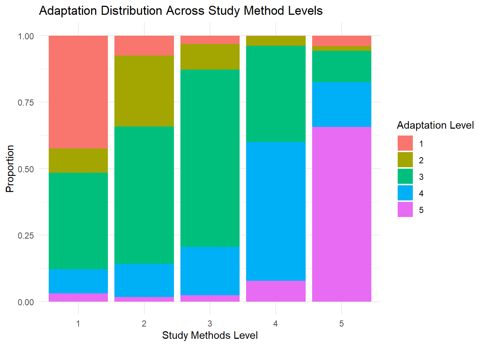

pacman::p_load(tidyverse, ggplot2, ggthemes, patchwork, ggstatsplot, scales)Take_Home_Ex01
Take Home Exercise 1 - Exploratory Analysis of Student Academic Performance and University Experience
Background
This exploratory data analysis uses the dataset from the article “Dataset of factors affecting learning outcomes of students at the University of Education, Vietnam National University, Hanoi” by Tran, Nguyen, and Le (2025). The dataset was compiled through an online survey of 2,170 students and alumni conducted from March to June 2023, capturing both demographic characteristics and perception-based educational factors. Key variables include lecturer quality, university support and facilities, training curriculum, classroom competition, and peer influence, with grade point average (GPA) as the primary measure of student learning outcomes. This dataset provides valuable insights into how multiple internal and external factors correlate with academic performance, making it a solid foundation for identifying patterns and relationships that inform educational strategies and student success.
Preperation
Package Loading
tidyverse- A family of modern R packages specially designed to support data science, analysis and communication task including creating static statistical graphs.ggplot2ggthemes- An R package provides some extra themes, geoms, and scales for ‘ggplot2’.patchwork- For combining multiple ggplot2 graphs into one figure.ggstatsplot- For creating graphics with details from statistical tests included in the information-rich plots.scales- Graphical scales map data to aesthetics, and provide methods for automatically determining breaks and labels for axes and legends.
Data Loading
edu <- read_csv("data/Education.csv")Data Cleaning
binary_vars <- c("Gender", "Policy_Stu", "Minority_Stu", "Poor_Stu")
likert_1_5 <- c("Time_Friends", "Time_SocicalMedia", "Time_Studying", "GPA",
"Adapt_Learning_Uni", "Study_Methods", "SupportOf_Uni", "SupportOf_Lec",
"Facilitie_Uni", "Quality_Lecturer", "TrainingCurriculum",
"Competitive_Class", "InfuenceF_Friends")edu <- mutate(
edu,
GPA = factor(GPA),
Gender = factor(Gender, levels = c(1, 2),
labels = c("Male", "Female"))
)Out Range Check
An out-of-range check was done to make sure all survey responses fall within their expected values. Binary variables should only contain 1 or 2, and Likert-scale variables should only range from 1 to 5. This step helps catch any data entry mistakes or unusual values that could affect the analysis. After checking, all variables were found to be within their valid ranges, so the dataset is clean and ready for further analysis.
binary_vars <- c("Gender", "Policy_Stu", "Minority_Stu", "Poor_Stu")
binary <- summarise(
edu,
across(all_of(binary_vars), ~ sum(!(.x %in% c(1, 2))))
)
binary <- pivot_longer(
binary,
cols = everything(),
names_to = "variable",
values_to = "n_out_of_range"
)
binary# A tibble: 4 × 2
variable n_out_of_range
<chr> <int>
1 Gender 2170
2 Policy_Stu 0
3 Minority_Stu 0
4 Poor_Stu 0likert_1_5 <- c("Time_Friends", "Time_SocicalMedia", "Time_Studying", "GPA",
"Adapt_Learning_Uni", "Study_Methods", "SupportOf_Uni",
"SupportOf_Lec", "Facilitie_Uni", "Quality_Lecturer",
"TrainingCurriculum", "Competitive_Class",
"InfuenceF_Friends")
likert <- summarise(
edu,
across(all_of(likert_1_5), ~ sum(!(.x %in% 1:5)))
)
likert <- pivot_longer(
likert,
cols = everything(),
names_to = "variable",
values_to = "n_out_of_range"
)
likert# A tibble: 13 × 2
variable n_out_of_range
<chr> <int>
1 Time_Friends 0
2 Time_SocicalMedia 0
3 Time_Studying 0
4 GPA 0
5 Adapt_Learning_Uni 0
6 Study_Methods 0
7 SupportOf_Uni 0
8 SupportOf_Lec 0
9 Facilitie_Uni 0
10 Quality_Lecturer 0
11 TrainingCurriculum 0
12 Competitive_Class 0
13 InfuenceF_Friends 0
NoteNote
In this dataset, several variables are coded numerically but represent categorical survey responses rather than true numerical values. Binary variables such as Gender, Policy_Stu, Minority_Stu, and Poor_Stu are coded as 1 and 2, where each number represents a category (e.g., Male/Female or Yes/No). These values do not indicate magnitude and are therefore treated as categorical factors. Additionally, many variables (e.g., GPA, Time_Studying, Study_Methods, SupportOf_Lec) follow a Likert 1–5 scale, representing ordered levels such as low to high or poor to excellent. Although stored as numbers, these values indicate ranked categories rather than continuous measurements. To ensure accurate analysis and visualization, binary variables are converted to factors, while Likert-scale variables are converted to ordered factors to preserve their natural ranking.
edu_clean <- edu %>%
distinct()
sum(duplicated(edu))[1] 226glimpse(edu)
summary(edu)EDA
EDA 1 - Overall Student GPA Distribution and Gender Composition
p_gpa <- ggplot(edu, aes(x = factor(GPA))) +
geom_bar(aes(y = after_stat(count / sum(count))),
fill = "#C03A8C") +
geom_text(
stat = "count",
aes(
y = after_stat(count / sum(count)),
label = paste0("n=", after_stat(count),
" ", scales::percent(after_stat(count / sum(count)), accuracy = 0.1))
),
vjust = -0.5,
size = 3.5
) +
scale_y_continuous(labels = percent) +
labs(title = "GPA distribution",
x = NULL,
y = "Share of students") +
theme_minimal()p_gender <- ggplot(edu, aes(x = Gender)) +
geom_bar(aes(y = after_stat(count / sum(count))),
fill = "#3C2C9B") +
geom_text(
stat = "count",
aes(
y = after_stat(count / sum(count)),
label = paste0("n=", after_stat(count),
" ", scales::percent(after_stat(count / sum(count)), accuracy = 0.1))
),
vjust = -0.5,
size = 3.5
) +
scale_y_continuous(labels = percent) +
labs(title = "Gender",
x = NULL,
y = NULL) +
theme_minimal()gpagen_dist <- edu %>%
count(Gender, GPA) %>%
group_by(Gender) %>%
mutate(prop = n / sum(n)) %>%
ggplot(aes(x = factor(GPA), y = Gender, fill = prop)) +
geom_tile(color = "white") +
geom_text(aes(label = percent(prop, accuracy = 0.1)),
size = 4) +
scale_fill_gradient(low = "#FDEBEB", high = "#7B1FA2") +
labs(
title = "GPA Distribution by Gender",
x = "GPA Level",
y = "Gender",
fill = "Proportion"
) +
theme_minimal()p_gpa | p_gender | gpagen_dist
The heatmap illustrates the distribution of GPA levels within each gender. For both male and female students, GPA level 3 represents the largest proportion, accounting for approximately 54.8% of females and 54.6% of males. This indicates that the majority of students, regardless of gender, fall within the average performance category. GPA level 4 is the second most common for both groups, with 32.1% among females and 30.0% among males. Slight differences appear at the lower and higher ends of the scale: males show a marginally higher proportion in GPA level 2 (8.3%) compared to females (4.6%), while females have a slightly higher proportion in the highest GPA level 5 (5.2% versus 2.5%). Overall, the GPA patterns are broadly similar across genders, suggesting that academic performance distribution does not differ substantially between male and female students in this sample.
EDA 2 - Time Studying vs GPA
study_gpa_summary <- count(edu, Time_Studying, GPA)
study_gpa_summary <- study_gpa_summary |>
group_by(Time_Studying) |>
mutate(prop = n / sum(n))
ggplot(data = study_gpa_summary,
aes(x = factor(GPA),
y = factor(Time_Studying),
fill = prop)) +
geom_tile(color = "white") +
geom_text(aes(label = scales::percent(prop, accuracy = 0.1)),
size = 3.5) +
scale_fill_gradientn(
colours = c("yellow", "orange", "red")
) +
scale_y_discrete(labels = c(
"1" = "Less than 2 hrs",
"2" = "2–4 hrs",
"3" = "4–6 hrs",
"4" = "6–8 hrs",
"5" = "More than 8 hrs"
)) +
labs(
title = "GPA Distribution by Study Time",
x = "GPA Level",
y = "Study Time per Day",
fill = "Proportion"
) +
theme_minimal()
Tip
Proportion Means - The percentage of students within each study-time category that fall into a specific GPA level.
The Heatmap illustrates how GPA levels are distributed across different study-time categories. Across all study groups, GPA level 3 remains the most common outcome, consistently accounting for around half of students. However, a gradual shift is observed as study time increases. Students who study 6–8 hours or more than 8 hours per day show a higher proportion in GPA level 4 compared to those who study fewer hours. In contrast, lower study-time groups (2–4 hours and 4–6 hours) display relatively higher proportions of GPA levels 1 and 2. Although the highest GPA level (5) remains relatively small across all categories, it appears slightly more present among students who study longer hours. Overall, the pattern suggests a modest positive association between study time and academic performance, where increased study duration corresponds to a higher concentration in above-average GPA levels.
EDA 4 - Lecturer Support Affection Against GPA
p1 <- ggplot(data = edu,
aes(x = factor(SupportOf_Lec),
y = as.numeric(GPA))) +
geom_boxplot(fill = "orange", alpha = 0.6) +
geom_jitter(width = 0.15, alpha = 0.2, color = "darkred") +
labs(
title = "GPA Distribution by Lecturer Support",
x = "Lecturer Support Level",
y = "GPA Level"
) +
theme_minimal()lec_trend <- edu |>
group_by(SupportOf_Lec) |>
summarise(mean_gpa = mean(as.numeric(GPA)),
.groups = "drop")
p2 <- ggplot(data = lec_trend,
aes(x = as.numeric(SupportOf_Lec),
y = mean_gpa)) +
geom_line(color = "darkred", linewidth = 1) +
geom_point(size = 3, color = "darkred") +
geom_text(aes(label = round(mean_gpa, 2)),
vjust = -0.8,
size = 4,
color = "black") +
scale_x_continuous(breaks = 1:5) +
labs(
title = "Average GPA Trend",
x = "Lecturer Support Level",
y = "Mean GPA"
) +
theme_minimal()lec_gpa_summary <- count(edu, SupportOf_Lec, GPA) |>
group_by(SupportOf_Lec) |>
mutate(prop = n / sum(n))
p3 <- ggplot(data = lec_gpa_summary,
aes(x = factor(GPA),
y = factor(SupportOf_Lec),
fill = prop)) +
geom_tile(color = "white") +
geom_text(aes(label = scales::percent(prop, accuracy = 0.1)),
size = 3) +
scale_fill_gradient(low = "yellow", high = "red") +
labs(
title = "GPA Proportion Heatmap",
x = "GPA Level",
y = "Lecturer Support Level",
fill = "Proportion"
) +
theme_minimal()(p1 | p2) /
p3 +
plot_layout(heights = c(1, 1.2))
The combined analysis suggests a generally positive association between perceived lecturer support and academic performance. The boxplots indicate that GPA distributions shift slightly upward as lecturer support increases, with higher support levels showing fewer low-GPA observations and a stronger concentration around GPA levels 3 and 4. The mean trend plot further supports this pattern: after a dip at support level 2 (mean ≈ 2.86), the average GPA increases progressively to approximately 3.34 at the highest support level. The heatmap reinforces this observation, showing that higher lecturer support levels correspond to larger proportions of GPA level 4 and smaller shares of lower GPA categories. Although GPA level 3 remains dominant across all groups, the upward shift in mean and distribution suggests that stronger lecturer support is modestly associated with improved academic outcomes within the sample.
EDA 5 - Study Methods vs Adaptation to University Learning
ggplot(edu) +
geom_bar(aes(x = factor(Study_Methods),
fill = factor(Adapt_Learning_Uni)),
position = "fill") +
labs(
title = "Adaptation Distribution Across Study Method Levels",
x = "Study Methods Level",
y = "Proportion",
fill = "Adaptation Level"
) +
theme_minimal()
Tip
The x-axis represents the level of Study Methods (from 1 = weaker study habits to 5 = stronger study habits).
The y-axis shows the proportion of students within each study method level. Because the bars are scaled to 100%, each column represents the full distribution of adaptation levels within that specific study group.
The legend indicates the Adaptation to University Learning levels (1–5). Each colour segment within a bar represents the share of students at that adaptation level.
The proportional distribution indicates a clear positive association between study methods and adaptation to university learning. As study method levels increase, the composition of adaptation levels shifts upward. Students with weaker study methods (levels 1–2) show a larger share of lower adaptation levels, whereas students with stronger study methods (levels 4–5) demonstrate a noticeably higher proportion of adaptation levels 4 and 5. The distribution becomes increasingly concentrated in the higher adaptation categories as study behaviours improve. This pattern suggests that effective study strategies are closely linked to better adjustment to university learning environments. While mid-level adaptation remains common across all groups, the upward shift in proportions at higher study method levels indicates a meaningful behavioural relationship rather than a random distribution. Overall, the findings support the idea that stronger academic habits are associated with improved learning adaptation outcomes.
Summary
Key Findings
Academic performance is concentrated in the mid-range. The majority of students fall within GPA level 3, followed by GPA level 4, indicating generally stable and moderate academic performance across the sample.
Gender differences in GPA are minimal. The distribution of GPA levels is largely similar between male and female students, suggesting no substantial performance gap based on gender.
Study time shows a modest positive association with GPA. Higher study durations correspond to a slightly greater proportion of above-average GPA levels, indicating that increased academic effort is linked to improved performance.
Social media usage shows only a weak relationship with GPA. While minor shifts are observed at higher usage levels, overall GPA patterns remain relatively stable, suggesting limited impact within this dataset.
Lecturer support is positively associated with GPA. Higher perceived support corresponds to a gradual increase in mean GPA and greater concentration in higher GPA categories.
Strong study methods are closely linked to better adaptation. Students with stronger study strategies demonstrate higher levels of adaptation to university learning, indicating a meaningful behavioural relationship.
Limitation
The dataset is based on self-reported survey responses, which may introduce response bias or social desirability bias.
Most variables are measured using Likert scales (1–5). Although treated numerically for analysis, the intervals between levels may not represent equal differences.
The analysis is exploratory and descriptive, meaning no causal relationships can be established between variables.
The sample represents a specific group of students and may not be generalisable to other institutions or populations.
Other potentially influential factors (e.g., socioeconomic background, mental health, academic discipline) were not included in the analysis.
Reference
- Original Data Source